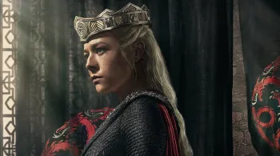
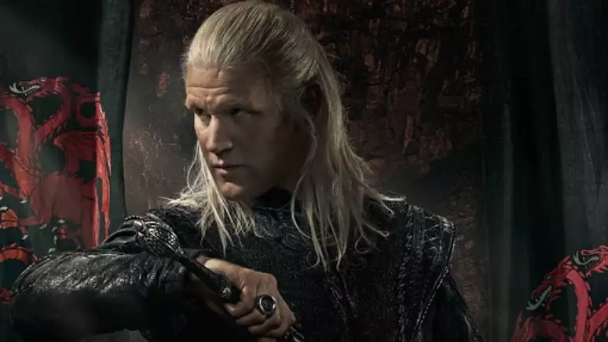
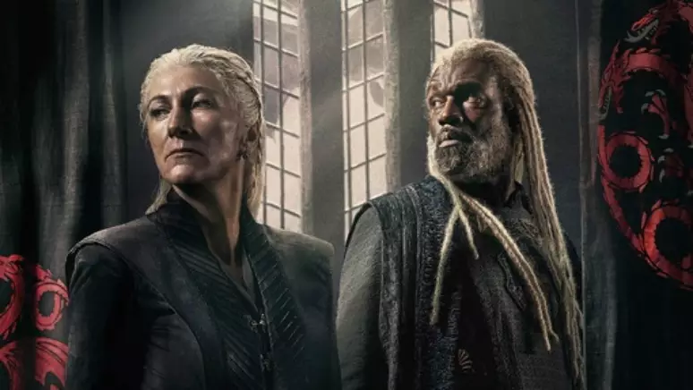
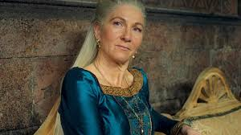
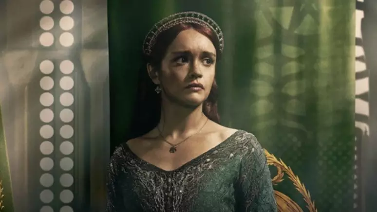
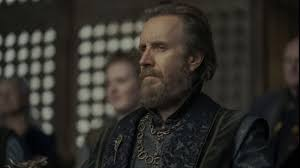
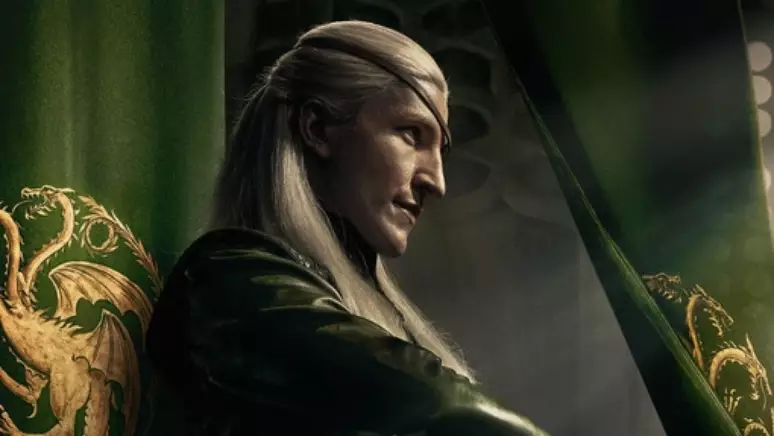
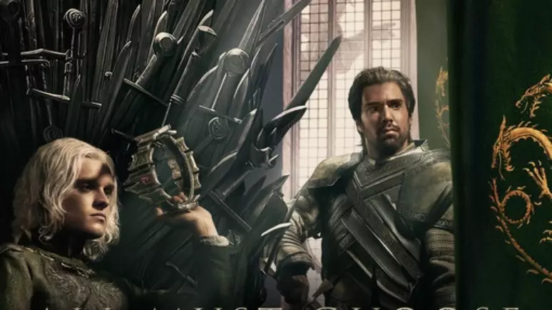

Está quase na hora de voltarmos para o mundo de gelo e fogo criado por George R.R. Martin. A HBO divulgou esta semana dois novos trailers de 'A Casa do Dragão', série que compartilha o mesmo universo do hit 'Game of Thrones'. Todos estão prontos para os novos episódios?
Ambientada 300 anos antes dos eventos da série principal, 'A Casa do Dragão' conta a história de uma guerra civil entre membros da família Targaryen, quando esta ainda era a grande detentora do poder em Westeros. Enquanto a primeira temporada preparou o terreno e desenhou o cenário da guerra, a segunda promete partir com tudo para os embates banhados a fogo e sangue e protagonizados por muitos dragões no ar.
A primeira temporada, vale recordar, culmina na morte do rei Viserys Targaryen (Paddy Considine) e a coroação de Aegon II (Tom Glunn-Carney).
A decisão de Alicent Hightower (Olivia Cooke) de seguir com a coroação do filho não é bem aceita por Rhaenyra (Emma D'Arcy), filha mais velha do rei e quem ele preparou a vida toda para sucedê-lo, e seus aliados. Informada por Daemon (Matt Smith) sobre a morte de seu filho Lucerys (Elliot Grihault) pelas mãos do próprio tio, Aemond (Ewan Mitchell), Rhaenyra abandona qualquer pretensão de conciliação e se prepara para a guerra total: de um lado, os Verdes, aliados de Aegon II e dos Hightower; de outro, os Pretos, aliados de Rhaenyra e os demais Targaryen.
Mas quem é quem neste conflito? Para ninguém se perder, preparamos um guia dos personagens principais e que serão destaques na segunda temporada de 'House of the Dragon'.
A Casa do Dragão: elenco
Primeiro, os Pretos.
Rhaenyra Targaryen
Filha mais velha do finado rei Viserys, Rhaenyra (Emma D'Arcy) é a pretendente ao Trono alocada em Pedra do Dragão e a montadora de Syrax, um dragão fêmea. Treinada a vida toda pelo pai para assumir o reino, ela é colocada de lado quando Viserys se casa com Alicent Hightower e tem com ele quatro filhos, todos homens. A imagem de Rhaenyra fica prejudicada quando ela dá à luz filhos bastardos, Lucerys e Jacaerys, durante seu casamento com Sir Laenor Velaryon (Theo Nate). Diante disso, após a coroação de Aegon II, ela reúne aliados à sua causa para lutar pelo que acredita ser seu de direito.
Daemon Targaryen
O personagem de Matt Smith é o irmão de Viserys e o segundo marido de Rhaenyra. O "príncipe rebelde" é uma das figuras mais perigosas e imprevisíveis da história. Grande aliado à causa da esposa, ele monta o imponente dragão Caraxes, e será um personagem vital para a segunda temporada liderando grandes batalhas.
Corlys Velarion
Representante da única família valiriana remanescente além dos Targaryen, Sir Corlys Velaryon é um exímio marinheiro e o pai de Sir Laenor. Aliado à causa da ex-nora, o Senhor das Marés fornece apoio militar e estratégico à causa dos Pretos, e controla as batalhas na água, sendo ele próprio a Serpente do Mar.
Rhaenys Targaryen
A Rainha que Nunca Foi é a esposa de Corlys Velaryon e tem uma história parecida com a de Rhaenyra, uma vez que ela mesma foi preterida em sua reivindicação do Trono em favor de seu primo, o finado Viserys. Estrategista e perspicaz, ela monta Meleys, um dragão fêmea chamada de Rainha Vermelha. Agora, os Verdes.
Alicent Hightower
Parte protagonista e parte antagonista a rainha Alicent Hightower foi a segunda esposa de Viserys, e é quem insiste para que seu filho seja coroado, após ter interpretado de forma equivocada as últimas palavras do antigo rei. É ela quem arquiteta as estratégias de guerra para os Verdes, ao lado do pai.
Otto Hightower
Pai de Alicent e Mão do Rei, o personagem de Rhys Ifans. Descrito como calculista e objetivo, ele está sempre nos bastidores confabulando e tentando virar o vento a seu favor. Sua aliança com a filha é um dos fatores-chave para a segunda temporada.
Aemond Targaryen
Irmão do rei Aegon II, o príncipe Aemond parece ter herdado as características rebeldes do tio, Daemon, e é um jovem impulsivo e com gosto pelas batalhas. É ele quem monta Vhagar, dragão-fêmea montada por Visenya durante a Conquista e o maior vivo durante a Dança dos Dragões. É graças à sua incapacidade de controlar a criatura, inclusive, que ele acaba matando Lucerys.
Aegon II Targaryen
Coroado rei, o jovem Aegon II tem uma personalidade questionável e é retratado como uma figura inapta ao cargo, por não ter espírito de liderança e as qualidades que se espera de um rei dos Sete Reinos. Ele monta o dragão Sunfyre, o Dourado.
Segunda temporada
Na nova temporada de A Casa do Dragão, veremos a guerra começar de verdade. Este é o período em que há mais dragões vivos em Westeros, e muitos deles devem começar a aparecer na série na nova temporada. Infelizmente, é justamente este o conflito que leva as criaturas a serem dizimadas até que, 300 anos depois, Daenerys consiga chocar os ovos de Drogon, Rhaegal e Viserion.
Além dos personagens já estabelecidos, outros rostos vão surgir nos episódios ainda inéditos. Entre os principais estão Addam e Alyn de Hull, dois bastardos legitimados da casa Velaryon que se aliam aos Pretos, o homem de armas Ulf, o Branco, Sir Simon Strong e a aguardada Alys Rivers.
Esses personagens e muitos outros vão se aliar aos diferentes lados da guerra, e vão influenciar diretamente nos eventos que seguirão -- já que tudo indica que a série pode ter até 3 ou 4 temporadas.